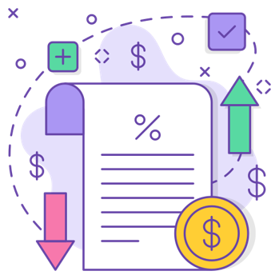

Administra de mejor manera tus Gastos
Muy pocas veces se habla de la salud financiera. Muchas personas sufren de alguna enfermedad como ansiedad y estrés
a causa del mal manejo de sus finanzas personales. Estamos acostumbrados a gastar el dinero que aún
no recibimos, por lo cual existe la necesidad de tener control de los gastos efectuados en el mes, con el fin de
poder administrar tus finanzas.